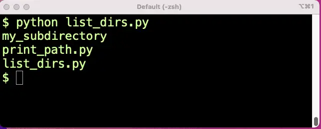
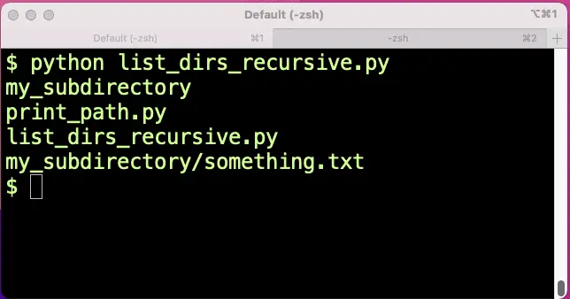
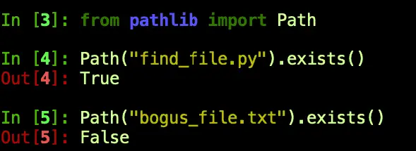

Find Files in Python: Complete Cookbook for Searching Files and Folders¶
Introduction¶
In addition to being an excellent general-purpose programming language, Python is also well known as a handy language for scripting. Naturally, therefore, Python has support for the kinds of file searching and path operations one can do in a bash script, for example.
However, finding files in Python can be daunting if you don’t know where to start, especially since you can choose between more than one library to find and manipulate paths and files. Before version 3.4, one would have used the glob module to find a file and used os.path module to perform other path operations, such as getting a directory given an absolute filename or creating an absolute path from a relative path. Python 3.4 introduced the pathlib module as an object-oriented API for filesystem paths.
This guide will focus on the pathlib module and teach you the basics of finding files and manipulating paths, including using glob patterns and recursive searching. We’ll also learn how to find various paths we might need to use as a starting point. For example, how would you find a file in a subdirectory of the user’s home directory, what’s the path of the currently executing file, or given a Python module name, where did that name come from? With the tools we’ll provide in this article, you’ll be able to locate any file in your system with ease.
The PathLib Module: Defining the Path Structure¶
Whether we’re dealing with the user’s home directory, the current working directory, or the directory containing an executing Python file, we’ll always need a way to build and manipulate paths robustly. Pyth n’s pathlib module provides most of what we need for this task. Although this module has a concept of “pure” paths (i.e., paths you can manipulate without really referring to the file system), it’s much more common that we simply want to construct a concrete path class.
For example, passing a file or directory name to the Path class constructor creates a concrete object of the type PosixPath on Linux or Unix-style systems (like macOS) or a WindowsPath object on Windows. Using the Path class, the root of the concrete classes in Python, allows the code we’ll demonstrate in this article to work in both environments.
Finding Files in the Current Directory¶
To start getting our hands on the Pathlib module, we can run the following code either as a file or from the command prompt. This will list the contents of the current working directory, that is, wherever we run it from (not where the Python script is located).
# list_dirs.py
from pathlib import Path
here = Path(".")
files = here.glob("*")
for item in files:
print(item)
We pass in a “.” as a starting point to construct the Path. We can then call the glob method on the path object to list all the files in this directory using “*.” The glob expression, *, will expand to mean “all files and directories,” just as it would if we used “ls *” on Linux or “dir *” on Windows.
Listing the contents of the directory I was working in, I get the following output:

I’ve tried to keep this folder pretty minimal. You c n see we list two python files and the subdirectory. By changing"*" to "*.py", we could focus on just the Python files, or specify a full filename, etc.
Searching for Files Recursively in Python¶
The glob method also supports an extended glob syntax, "**/*", which allows you to search for files recursively. (This syntax may be new to some of my readers, but it’s the same syntax supported by zsh and .gitignore files if you’re familiar with those). This glob pattern means “search here and in all subdirectories.”
# list_dirs_recursive.py
from pathlib import Path
here = Path(".")
files = here.glob("**/*")
for item in files:
print(item)
This time we see a test file I put in the directory for the purpose and our new Python file.

Finding a Single File Recursively¶
Using just a little creativity, we can also search recursively for a single file or a subset of files. For example, if we just wanted to find something.txt no matter where it was starting from our current working directory, we could use “**/something.txt” as the glob pattern:
# find_file.py
from pathlib import Path
here = Path(".")
files = here.glob("**/something.txt")
for item in files:
print(item)
The output will show the folder structure relative to where the Path object is set.
my_subdirectory/something.txt
We use a for loop to iterate because glob returns a generator of path objects of the same type as the path on which it’s called (in our case, PosixPath).
Finding an Absolute Path¶
So far we’ve shown examples of using relative paths. We started out by setting a variable to Path("."), and relative to that, we were able to use “glob” to find “my_subdirectory omething.txt”, for example. But sometimes what we need to find is an absolute path given that information. Using path objects like Posix path or WindowsPath, we can use the resolve method to get this information. Resolve returns an absolute path. It also resolves any symbolic links.
"""Display some known relative and absolute paths"""
from pathlib import Path
here = Path(".")
file_path = Path("my_subdirectory/something.txt"
print(f"The absolute path to {here} is {here.resolve()}")
print(f"The absolute path to {file_path} is {file_path.resolve()}")
Output:
The absolute path to . is /Users/johnlockwood/paths-demo
The absolute path to my_subdirectory/something.txt is /Users/johnlockwood/paths-demo/my_subdirectory/something.txt
Getting the Directory of the Currently Executing File¶
You may already be aware that when Python loads a module, such as a program file, it sets a variable for that module, “__file__”, to the (absolute) filename of the module. Given a file, therefore, we can display where it is:
# print_path.py
print(__file__)
Output:
/Users/johnlockwood/paths-demo/print_path.py
The __file__ variable is not a path object, but a string. However, by constructing a path from it, we can query two special attributes of a file, name and parent, which will give us just the name portion of the file and the directory portion, respectively:
# print_directory.py
from pathlib import Path
file_path = Path(__file__)
print(f"The file {file_path.name} is located in directory {file_path.parent}.")
Output:
The file print_directory.py is located in directory /Users/johnlockwood/paths-demo.
Creating a File In the Same Directory As a Python File¶
Generally, retrieving the file’s directory using the parent attribute is more useful than getting its name, since we can now construct an absolute filename we can use to pass to another function. This is the correct approach to locating a file next to another Python file, since – unlike Path(".") – the path given by Path(__file__) will always be relative to the file itself, not where the file was run from.
For the Path classes in the pathlib module, we can join path components together using an overloaded “/” operator. (Note that we use “/” for this even on Windows – where the Path class will do the right thing and use the backslash operator in the constructed path).
With Path imported and given what we have so far, we can create a new filename using the one-liner:
output_path = Path(__file__).parent / "output.txt"
To review, this code constructs a Path from the __file__ string, uses the parent attribute to get the file’s directory, then uses the slash operator to construct a new Path object to an output file in the same directory as the running Python file.
Yes, But Does the File Exist?¶
In the last example, you may have noticed that we constructed a path that doesn’t exist. Not to worry, we can ask a path to tell us if what it points to exists or not, us ng (no surprises here), the exists method.
Here’s a quick IPython screenshot that demonstrates how it works:

Next, let’s turn our attention to two more such “query” methods.
Working with Files and Directories¶
When we constructed a new filename based on the name of the Python __file__ built-in variable, we knew that __file__ was a file name, so it made sense to use the parent attribute to get the directory where the file was located. Of course, given an absolute path to a directory, parent behaves “differently,” returning the directory that contains this one. For example:
"""Display the current and parent directory"""
from pathlib import Path
here = Path(".").resolve()
print(f"You are here: {here}, a sub-directory of {here.parent}.")
Sample output:
You are here: /Users/johnlockwood/paths-demo, a sub-directory of /Users/johnlockwood.
So far, in these simple examples, we’ve always known the type of Path we’re dealing with, but if we didn’t, the concrete path classes we’ve been dealing with can let us know if we’re referring to a file or a directory using the methods is_file()and is_dir(). We’ll use these methods in the following example:
Example: Recursively Listing Files and Directories in Python:¶
Let’s put together a few of the techniques we’ve been discussing to build a sample where we do a recursive search for all files and directories and print the results.
# list_paths.py
"""Recursively list files and directories"""
from pathlib import Path
here = Path(".")
for path in sorted(here.glob("**/*")):
path_type = "?"
if path.is_file():
path_type = "F"
elif path.is_dir():
path_type = "D"
print(f"{path_type} {path}")
Abbreviated output:
F abs_path.py
F construct_filename.py
F directory_parent.py
F list_paths.py
D module
F module/file_in_module.py
D my_subdirectory
F my_subdirectory/something.txt
F print_directory.py
Finding Other Files and Directories¶
Get the User’s Home Directory in Python¶
To get the user’s home directory, simply call the class method “home” on the Path class. This will retrieve the user’s home directory whether in a Linux-like environment or on Windows.
"""Display the user's home directory"""
from pathlib import Path
print(Path.home())
The output of course will depend on the user.
Getting the Current Working Directory¶
To get us started constructing Path objects, I’ve been using the path given by Path(".") to retrieve the current working directory. I’ve tested that that method works even if you change the current working directory programmatically, but there is another way to accomplish this that is perhaps a bit more clear: Path.cwd(). As you might expect, just like Path.home, Path.cwd is a class method, so you can call it on the class itself – you don’t need an instance.
Like the Path string constructor, Path.cwd() and Path.home() both return concrete Path objects, so we can build paths immediately using the slash operator. Do you need to query whether the user already has a configuration installed for Amazon’s AWS command-line interface, for example?
from pathlib import Path
default = Path.home() / ".aws"
print(default.exists())
Example: Creating a Directory in the User Home Directory in Python¶
The concrete pathlib.Path class has many useful methods in addition to the ones we’re focusing on here, i.e., those that are related to finding files and directories.
Because it’s such a common use case, however, we thought we’d show an example using the Path.mkdir() method. Starting with the user’s home directory, we’ll create a “hidden” directory for a hypothetical CodeSolid command line.
Because creating a directory will fail with an exception if the path already exists, we check for this and do the right thing.
"""Creates a .codesolid directory in the user's home directory"""
from pathlib import Path
DIRECTORY_NAME = ".codesolid"
config_directory = Path.home() / DIRECTORY_NAME
if not config_directory.exists():
config_directory.mkdir()
print(f"Directory {config_directory} created.")
else:
print(f"Directory {config_directory} already exists, skipping.")
Finding Python Module Paths and Files¶
Unlike the current working directory and the user’s home directory, which are common locations in which we might want to read or write files and directories, it’s perhaps less common to need to find locations related to where Python will search for modules or the actual locations containing a specific module. Nevertheless, occasionally this may help with troubleshooting, especially if the wrong code appears to be getting loaded or things are otherwise not working as you’d expect.
Exploring the PYTHONPATH and sys.path Variables¶
As you know, the PYTHONPATH environment variable adds search paths to the default locations through which Python will search when you import a module. Therefore you can read it as you would any environment variable:
$ export PYTHONPATH=/Users/johnlockwood/source/CodeSolid
$ python
...
>>> import os
>>> os.environ["PYTHONPATH"]
'/Users/johnlockwood/source/CodeSolid'
If you’re troubleshooting, however, reading the environment variable is probably not sufficient, since what you’re really interested in is the effective combination of the PYTHONPATH plus whatever the default search path is. For this purpose, the sys.path attribute is a much more handy tool:
>>> import sys
>>> sys.path
['', '/Users/johnlockwood/source/CodeSolid', '/Users/johnlockwood/.pyenv/versions/3.11.0a6/lib/python311.zip', '/Users/johnlockwood/.pyenv/versions/3.11.0a6/lib/python3.11', '/Users/johnlockwood/.pyenv/versions/3.11.0a6/lib/python3.11/lib-dynload', '/Users/johnlockwood/.pyenv/versions/3.11.0a6/lib/python3.11/site-packages']
The first element of the array will be the directory that loaded the current module or an empty string, as shown here, if Python was launched interactively. After that, you’ll see the PYTHONPATH entries and the default module search location
PYTHONPATH shows us how the module path could have been altered, while sys.path gives us all the paths from which a module could have been loaded. We can even go further than this, however, and examine the exact location from which Python has loaded (or even would load) a specific module. The simplest way to do this for a loaded module is to use our friend, the __file__ attribute. or example:
Finding the Filename from Which a Python Module Was Loaded¶
>>> import json
>>> json.__file__
'/Users/johnlockwood/.pyenv/versions/3.11.0a6/lib/python3.11/json/__init__.py'
Using a somewhat less reliable method, we can sometimes find the path from which a module would be loaded even without actually loading it. This generally works for user-defined modules and Python runtime library modules that are not loaded by the “FrozenLoader” module loader. As we’ll see below, it doesn’t work well for the “os” module.
"""Shows how find_spec can sometimes be used to get a file load location path"""
from importlib.util import find_spec
for module in ['os', 'json', 'module.file_in_module']:
spec = find_spec(module)
print(f"{module} origin: {spec.origin}")
Sample output:
os origin: frozen
json origin: /Users/johnlockwood/.pyenv/versions/3.11.0a6/lib/python3.11/json/__init__.py
module.file_in_module origin: /Users/johnlockwood/paths-demo/module/file_in_module.py
Closing Thoughts¶
As we’ve seen, the Python pathlib library contains most of what you need to find files in Python and list directories and files recursively as well. However, as we suggested at the outset, there’s considerable overlap between what’s available in pathlib and what we find in the os and os.path libraries. We chose to focus on pathlib here since we believe that in many cases it makes the code more convenient to work with, and we didn’t see much point in a tutorial that taught you two ways to do something if one would suffice. That said, if you have code based on os.path that works well, we honestly see no compelling reason to go rework it.
In the end, for cases like these, sometimes we just have to open a console, type import this, and bask in the wisdom of the Zen of Python:
There should be one– and preferably only one –obvious way to do it.
Although that way may not be obvious at first unless you’re Dutch.
You May Also Enjoy¶
Python Format Strings: From Beginner to Expert